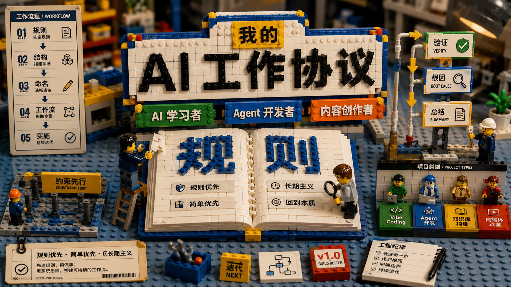

My AIOS v2
CLAUDE.md 半年打磨 · 60 条规则差点撞到 150 指令上限
AIOS 半年没动，今天抽一下午打磨，从 7 节扩到 9 节、约 60 条独立指令。本文拆这次调整的核心变化、关键研究发现（LLM 可靠遵循约 150-200 条指令，且会均匀降级），以及项目类型规则为什么应该归到各项目自己的 CLAUDE.md，而不是堆在主文件里。

朱有以 · My AIOS v2 · 2026/06/26
太久没有管理更新 AIOS（AI Agent Operating System）了，随着使用 Claude Code 的经验增加，有了一些心得，而那份 CLAUDE.md 文件有小半年没动了，今天抽时间仔细打磨了一下。
下面把旧版到新版的变化、过程中撞到的一个关键研究、以及几个值得讨论的取舍直接摊开。先说清楚来龙去脉，再说怎么改、改了什么、为什么改、还有什么没改。
Where it started
上一份 AIOS 其实是根据 @数字生命卡兹克 的文章修改的。原文写得很好——言简意赅，用最少的话写出最全面的系统提示词，特别是约束、自主边界、工程纪律三部分，能让新手少踩很多坑。
那份旧版一共有 7 节、约 30 条规则：
- 关于我 · 朱有以，AI 学习者和输出者（AI 自媒体创作者），非程序员出身
- 思维原则 · 回到问题本质、不谄媚
- 约束先行 · 新项目先写 CLAUDE.md
- 项目类型说明 · vibe coding / agent 开发 / 知识库 / 自媒体
- 沟通方式 · 默认中文，结论先行
- 自主边界（红线） · 删除、git push、修改 .env 等必须先问
- 通用工程纪律 · 改完主动跑验证、不注释报错
这份结构半年前读着很顺，但今天再看，已经不够用了。原因不是卡兹克写得不好——是使用场景在变化。半年时间，Claude Code 从「偶尔用用」变成了「每天 4-5 小时」的主力工具，过去那套轻量版的约束开始到处漏风。
What changed
新版一共有 9 节、约 60 条独立指令（每个可执行规则算一条）。下面把核心结构对比一下：
- 关于我
- 思维原则
- 约束先行
- 项目类型说明
- 沟通方式
- 自主边界（红线）
- 通用工程纪律
- 关于我
- 工作定位 （新）
- 思维原则（拆 4 条）
- 约束先行
- 项目类型
- 默认工作流 （新）
- Agent 开发规范 （新）
- 工程规范
- 沟通方式
- 输出规范 （新）
- 完成标准 （新）
- 自主边界（红线）
几个关键变化：
1. 思维原则从 1 段变成 4 段。原来只写「第一性问题、不谄媚」就结束了。现在拆成「第一原则 / 保持真实 / 简单优先 / 长期主义」四条独立规则，每条有自己的判断标准。原因是——一句模糊的话，模型跟着模糊做。拆成 4 条之后，「长期主义」会单独触发「同一操作出现第二次就该自动化」这种连锁规则。
2. 新增「工作定位」。明确「默认把我视为长期合作的开发者，而不是一次性问答用户」。这条直接决定了模型在 vibe coding 时，是给一个能跑就行的小 demo，还是给一个能维护的工程。
3. 新增「默认工作流」。把「理解目标 → 阅读上下文 → 分析问题 → 制定方案 → 实施 → 验证 → 总结」固化成 7 步。原来是默认行为，现在是显式约束。
4. 新增「Agent 开发规范」。优先级写死：Context First > Reuse First > Tool First > Build First。开始工作前先看有没有现成的 Tool、Agent、Prompt、Skill、Workflow。Prompt 保持单一职责、参数化、模块化、可组合、可复用。
5. 自主边界从 6 条扩到 4 大类。原来只列「删文件 / 改 .env / git push / 装依赖 / 公开发布」。现在按「数据安全 / 共享状态 / 配置变更 / 长期文档」分类组织，更容易记忆。
The 150-instruction ceiling
这次打磨过程中撞到的一项研究，直接决定了新版不再继续膨胀。
研究显示，前沿 LLM 能可靠遵循约 150-200 条指令。但更关键的是：随着指令数量增加，模型不会只忽略靠后的指令，而是对所有指令均匀降级。也就是说——不是「后面 50 条不跟」那么简单，而是「前面 100 条也开始飘」。
几个数字：
指令数的上限
已包含的独立指令数
独立指令数
已用掉的比例
我那份新 AIOS 大约 60 条独立指令。Claude Code 内置系统提示已经约 50 条。两者相加，已经接近可靠遵循上限的三分之二。
这意味着——新版不能再加内容了。再加 10 条，AI 就会开始「均匀降级」，前面看似稳定的规则也会开始飘。
这也是为什么我这次没把「项目类型」的具体规则写进主文件——那些应该放到各项目自己的 CLAUDE.md 里。主文件保通用，项目文件保具体，总指令数才不会爆炸。
Trade-offs I made
如果只看「我想让 AI 知道的所有事」，60 条远远不够。但摆在「150 指令上限」和「均匀降级」面前，60 条反而是最合理的选择。
几个具体的取舍：
1. 「项目类型」的具体规则全部外迁。Vibe Coding、Agent 开发、知识库、AI 内容创作这四类，每一类都有自己的详细规范。这些不可能全塞进主文件。现在主文件里只保留「按上下文自动识别，无法判断时默认 Vibe Coding」这一条；具体规则放 ~/My_channel/papers/CLAUDE.md 之类的项目级文件。
2. 「完成标准」独立成节。原来散在「沟通方式」和「通用工程纪律」里，现在单独拉出来：实现目标 / 通过验证 / 不引入明显副作用 / 符合项目规范 / 保持代码可维护，5 条全部满足才算「完成」。这是反「AI 自报完成」的关键。
3. 「长期主义」从一句口号变成 3 条规则。重复 3 次以上的操作 → 主动提示是否值得自动化；需要长期维护的 → 优先标准化；可能复用的 → 优先模块化。原来这层意思埋在「思维原则」一段话里，现在拆出来，模型才真的会问「这件事要不要做成 Skill」。
4. 「保持真实」拆出独立一节。原来和「思维原则」混在一起。现在明确「不做无实质内容的正面评价」「只在有具体理由时才表示认同」「方案有问题直接指出」「有更好的方案直接推荐」。这四条是反「谄媚」的具体防线。
What I left out
这次打磨最大的认知变化，是意识到AIOS 不是越全越好。
半年前我会想「把所有好做法都写进去」。半年后发现——写得越多，跟得越差。模型在指令密度高到一定程度后，会进入「广覆盖 / 浅执行」的模式，每条都点头，每条都不真的执行。
所以新版的取舍原则是：
- 主文件保通用 · 跨项目都能用的原则、约束、边界
- 项目文件保具体 · vibe coding 怎么写 prompt、agent 怎么设计、knowledge 怎么组织，放到各项目 CLAUDE.md
- Skill 保流程 · 跨任务复用的工作流，沉淀成 Skill 而不是写进系统提示
- Memory 保上下文 · 长期会忘的事（用户偏好、项目背景、协作方式），写进 memory 而不是塞提示词
这样分完，AIOS 主文件永远控制在 60-80 条规则以内，模型可以稳定执行；具体细节通过「按需加载」解决，不挤占主指令预算。
下面是新 AIOS 的完整文本。各位可以照搬结构、按自己的场景调整内容——但不建议超过 80 条，再多就真的飘了。
完整文本约 1700 字、60 条独立规则。这是上限，不再往上加。
SOURCES & CREDITS
引用与出处
-
原版 AIOS
AI Agent Operating System · 系统提示词设计
作者：数字生命卡兹克（@kazike_）。本文 V1 版基于其原创结构修改，本次升级为 V2 独立版本。 - 指令遵循研究 研究显示前沿 LLM 能可靠遵循约 150-200 条指令；指令数超过上限时，模型不是忽略靠后指令，而是对所有指令均匀降级。具体论文待补充。
- 本文定位 本文是个人 AIOS 升级的实战记录，不是教程。每个使用 Claude Code 的人都应该按自己的使用习惯打磨自己的 AIOS——不要直接抄，关键是想清楚自己要 AI 跟住哪些事。
如果你也在用 Claude Code 干重活，建议每 3-6 个月回头看一遍自己的 CLAUDE.md。半年时间，模型没变，你变了——使用场景在变，能跟住的指令预算没变。这件事只有自己会记得做。
AIOS 不是·一次写完就再也不动的文件
它应该和你的使用习惯一起长，但永远不要超过模型能稳定执行的指令上限。
各位大神有什么见解，还请多多指点。